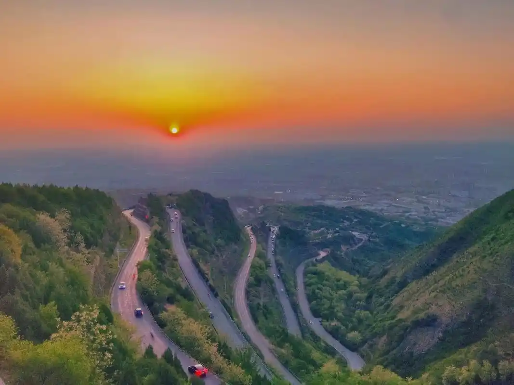
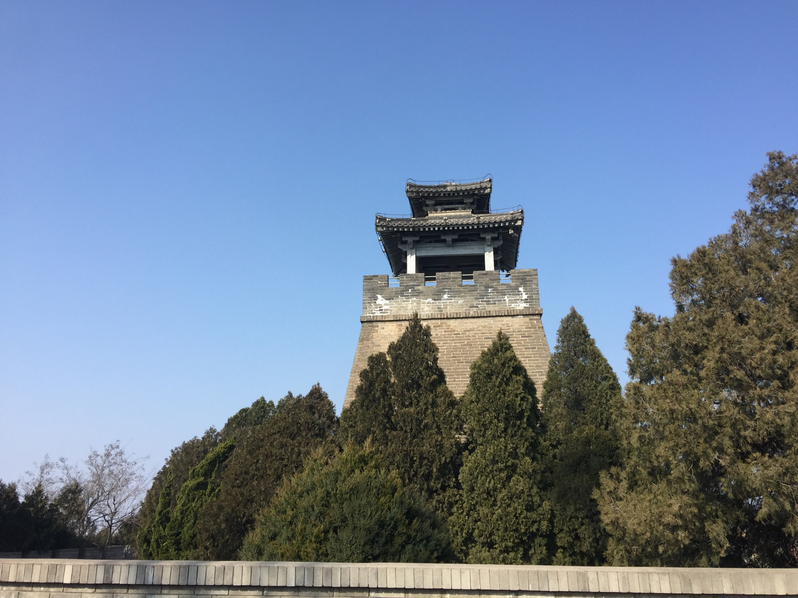
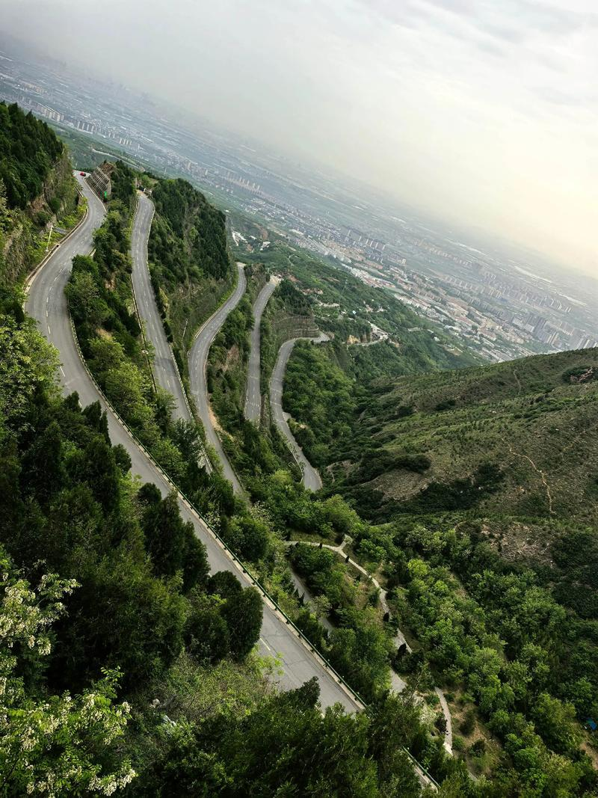
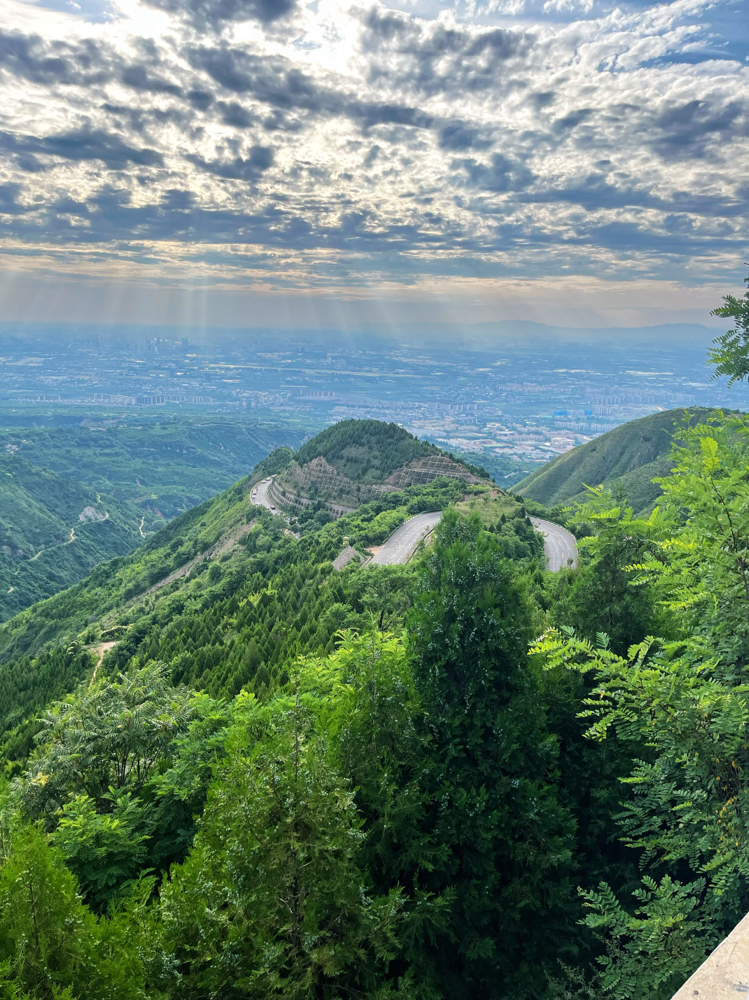

骊山晚照
地理位置
西安市临潼区城南
海拔
1302 米
山体特征
东西绵延约25公里
地位
国家级风景名胜区 / 关中八景之一
夕照骊山：关中绝美落日
"骊山晚照"是关中八景中最具画面感的一景。骊山横亘于临潼城南，山势如骏马（"骊"意为纯黑色的马），每当天气晴好的傍晚，夕阳从西边洒来，整座山体笼罩在金红色的光芒之中。赭红色的山岩与苍翠的松柏在斜阳下交相辉映，层林尽染，山峦仿佛披上了一层锦绣华裳。远望骊山，如一幅浓墨重彩的山水画卷在天边徐徐展开。
骊山晚照之所以格外动人，不仅因为其自然之美，更因为这座山承载了太多的历史记忆。山脚下是华清宫——唐玄宗与杨贵妃的爱情见证；山腰有兵谏亭——西安事变蒋介石藏身处；山顶有周幽王烽火戏诸侯的烽火台遗址。夕阳之下，数千年的风流云涌仿佛都凝结在了这片山色之中。

骊山的历史层次
骊山是一座"历史的千层蛋糕"。自西周以来，每一代王朝都在这座山上留下了印记——西周幽王在此举烽火戏诸侯；秦始皇陵选址于骊山北麓；唐代帝王在此建温泉行宫；1936年西安事变在此发生。登上骊山最高处的烽火台，向北俯瞰临潼全城和渭河平原，向南眺望莽莽秦岭，东望可远眺秦始皇陵的封土堆——一座山览尽三千年。
最佳观赏"骊山晚照"的位置不在山上，而是在临潼城区的开阔地带——夕阳时分站在临潼街头，面南而望，整个骊山横亘眼前，金光洒满山峦，是关中平原上最令人心醉的黄昏。
图片画廊



参观信息
| 地址 | 西安市临潼区华清路（骊山国家森林公园） |
|---|---|
| 开放时间 | 08:00 — 18:00 |
| 门票 | 骊山景区 70 元；与华清宫联票 150 元 |
| 交通 | 地铁 9 号线华清池站；与华清宫同一入口 |
| 小贴士 | 最佳观景时间：春秋季晴天的 17:30—19:00；可乘索道上山（上山35元），步行约40分钟登顶烽火台 |